K-CITY · SUMO 환경에서 BC / Online SAC / RLPD 비교
국내 실제 도로 중 가장 다양한 도로 기하구조와 교통 요소를 갖춘 K-City를 교통 시뮬레이터 SUMO(Simulation of Urban MObility) 상에 구현하였으며, 일반 차량(HV)과 자율주행 차량(AV)이 함께 주행하는 혼합 교통류(Mixed-Traffic) 시뮬레이션 환경을 구축하였습니다. 그 위에서 주변 차량 · 교통신호 · 목적지 경로를 고려해 안전하고 효율적으로 주행하는 자율주행 차량(AV)의 의사결정 정책을 개발했습니다.
규칙 기반 전문가(B0)의 주행 데이터를 바탕으로 BC, Online SAC, RLPD 세 가지 학습 방법을 같은 환경과 같은 평가 사례에서 비교했습니다.
| 좋은 도로 환경 구축 | K-CITY를 SUMO로 구현 (Edge 176개, 감응식 신호 14곳, 회전교차로) |
|---|---|
| 정상적인 차량 주행 | HV 4종 혼합, 검증 시 2,124대 출발 · 도착, 충돌 0 · 텔레포트 0 |
| 올바른 데이터 수집 | 0.5초 결정마다 (관측, 행동, 보상, 다음 관측, 종료) + 전체 State 저장 |
| 학습된 모델의 정상 작동 | 충돌률 5% 이하 목표, BC · SAC · RLPD 3가지 모델 비교 |
전문가의 행동을 그대로 따라 하도록 지도학습합니다. 보상은 쓰지 않습니다.
사전 데이터 없이 환경과 직접 상호작용하며 강화학습합니다.
매 batch의 절반을 전문가 데이터로 채워 온라인 강화학습합니다.
학습 방식의 자세한 내용은 모델 설계에 있습니다.
K-CITY는 자율주행 기술의 성능과 안전성을 반복적으로 검증하기 위한 시험시설로, 경기도 화성 한국교통안전공단 자동차안전연구원에 있습니다. 신호 교차로, 다차선 도로, 회전 교차로를 모두 갖추고 있어 도로 구조에 따라 서로 다른 차량 상호작용과 판단 과제를 만들 수 있다는 점 때문에 선정했습니다. 저희는 이 도로망을 교통 시뮬레이터 SUMO로 옮기고, 신호와 일반 차량을 넣어 복합 교통 환경을 만들었습니다.
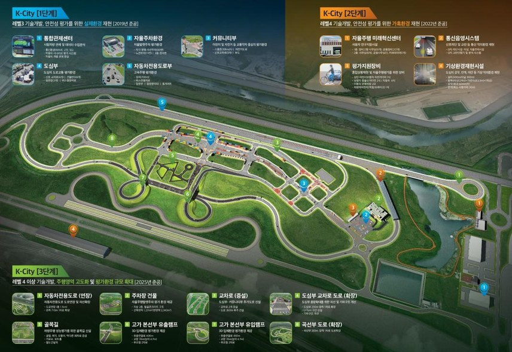
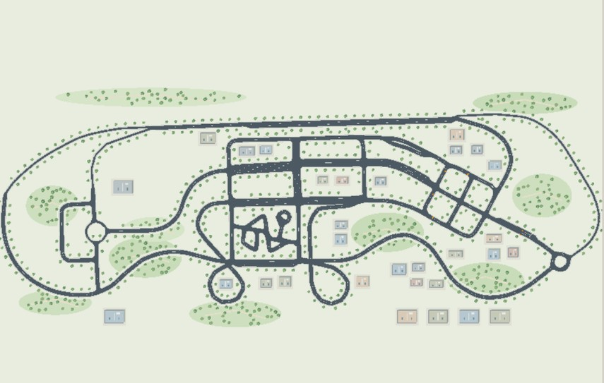
도로 형상은 CARLA의 K-CITY OpenDRIVE를 기반으로 만들었습니다. 실제 신호 주기와 교통량 자료는 구하지 못해 가정한 값으로 설계했으며, 건물·나무·녹지와 선택형 항공사진 배경은 화면용입니다.
SUMO의 자동 보조를 끈 상태에서, 정책이 직접 내려야 하는 판단을 시나리오마다 하나씩 검증합니다. 앞뒤 방향(A) · 옆 방향(B) · 우선권(C)으로 도심 주행의 핵심 판단 세 가지를 나눴습니다.
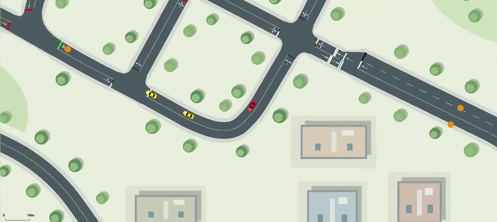
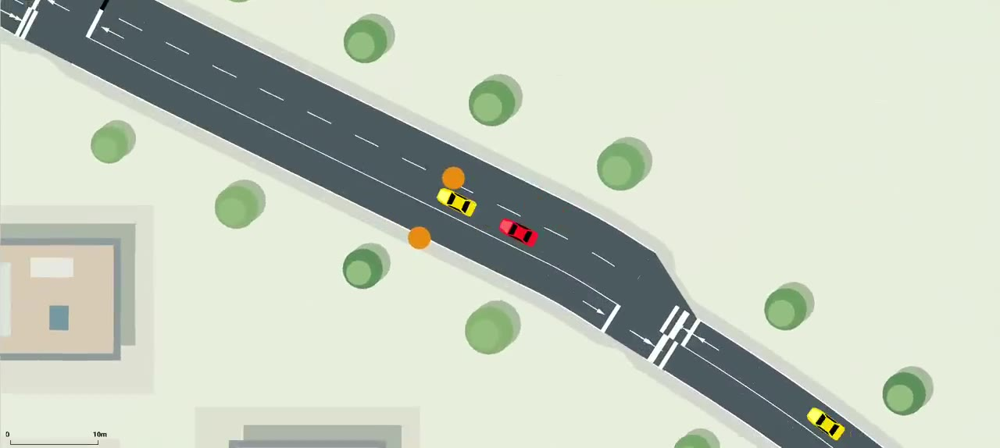
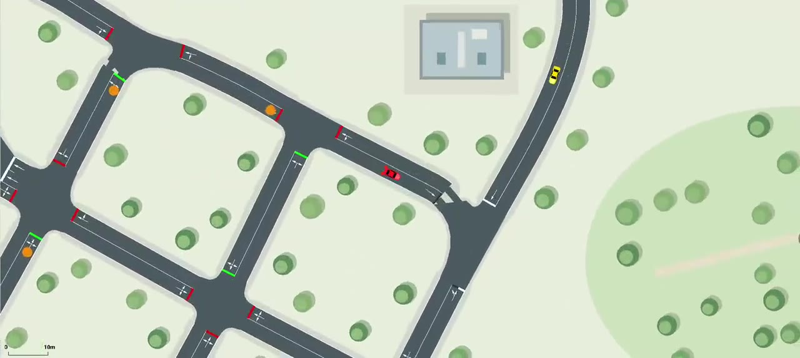
AV는 0.5초마다 63차원 관측을 받아 2차원 행동 [가감속, 차선 변경]을 출력합니다. 차선 변경 출력은 {-1, 0, +1} 명령으로 바꿔 적용합니다.
운전자가 직접 보거나 경로 지도에서 알 수 있는 정보
| 묶음 | 차원 | 내용 |
|---|---|---|
| 자차 상태 | 4 | 속도, 가속도, 남은 경로 거리, 남은 시간 |
| 주변 차량 | 20 | 주변 차로 5개의 앞 · 뒤차 간격, 상대속도 |
| 차로 정보 | 14 | 차로 존재, 점유 밀도, 차로 끝남, cooldown |
| 신호 | 4 | 다음 신호까지 거리, 적 / 황 / 녹 |
| 교차로 | 21 | 진행 방향, 양보 표지, 교차로 차량 슬롯 3개 |
경로 차선 안내와 우선권 판정은 관측에 넣지 않았습니다. 이 판단은 정책이 직접 해야 합니다.
B2 SAC · B3 RLPD의 학습 신호 (B1 BC는 전문가 행동만 모방)
| 항목 | 값 | 목적 |
|---|---|---|
| 경로 진행 | 진행 거리(m) / 10 | 목적지 방향 주행 |
| 도착 | +10 | 완주 |
| 시간 | 결정마다 −0.01 | 무한 대기 억제 |
| 충돌 | −20, 종료 | 안전 (A · B · C) |
| 적색 신호 진입 | −10, 종료 | 신호 준수 (A) |
| 양보 위반 | 0 (기록만) | 우선권 관측 (C) |
종료되면 남은 진행 · 도착 보상(약 12~32)도 잃습니다. 항목별 값은 데이터의 reward_components에 기록됩니다.
| 모델 | 학습 방식 | 사용 데이터 | 보상 사용 |
|---|---|---|---|
| BC (B1) | 전문가 행동 따라 하기 (지도학습, MSE 손실) | 전문가 성공 Episode · 학습 20만 / 검증 5만 | ✕ |
| SAC (B2) | 온라인 강화학습 (RLPD와 같은 학습기) | 환경 경험 (사전 데이터 0%) | ○ |
| RLPD (B3) | 온라인 강화학습 + 사전 데이터 | 매 batch의 절반 = 전문가 데이터 (100만 전이, 실패 포함) | ○ |
공통: 같은 Actor 구조 · 평가 시 결정적 행동 · RL은 방법과 seed마다 30만 전이 (seed 11 · 22 · 33)
데이터 1행은 0.5초마다 내린 결정 1번(Transition)입니다. 세 시나리오(A · B · C)를 주행하며 기록했고, 전문가 데이터는 BC 학습과 RLPD 사전 데이터로 썼습니다. SAC · RLPD의 온라인 학습 기록과 최종 정책의 주행 기록도 함께 공개했습니다.
| 출처 | 전이 수 | split |
|---|---|---|
| 전문가 (B0) | 4,001,377 | expert_train · expert_val |
| SAC 온라인 학습 (seed 11 · 22 · 33) | 900,000 | rl_train |
| RLPD 온라인 학습 (seed 11 · 22 · 33) | 900,000 | rl_train |
| 최종 SAC 정책 주행 (seed 11 · 22 · 33) | 2,101,685 | archive |
| 최종 RLPD 정책 주행 (seed 11 · 22 · 33) | 2,101,399 | archive |
| 합계 | 10,004,461 |
압축 파일 안에 데이터 파일 49,257개와 README, OBSERVATIONS.txt, NumPy로 읽는 load_kcity.py, metadata 폴더가 들어 있습니다.
과제에서 정한 필수 항목 19개에 저희 팀이 재현과 분석을 위해 25개를 더 기록했습니다.
필요한 환경
SUMO 공식 설치 안내를 따라 SUMO를 설치하고 SUMO_HOME을 설정합니다.
git clone <GitHub 저장소 주소>
cd <저장소 폴더>
pip install numpy torch gymnasiumK-CITY 맵에 일반 차량이 계속 투입되는 SUMO 화면을 띄웁니다.
python runner/view_kcity.py공개한 데이터셋을 내려받거나, 규칙 기반 전문가로 직접 병렬 수집합니다.
# Hugging Face에서 받기
hf download BinJinYe/JA_IN_JAE_TEAM2 --repo-type dataset --local-dir data/
# 직접 수집하기
python runner/collect.py --output runs/expert --workers 8# B1 BC
python runner/train_bc.py views --pool runs/expert --output runs/bc_views
python runner/train_bc.py train --views runs/bc_views --seed 11 --output runs/bc_seed11
# B2 Online SAC (사전 데이터 없음)
python runner/train_rl.py --method B2 --seed 11 --output runs/B2_seed11
# B3 RLPD (전문가 데이터를 사전 데이터로)
python runner/train_rl.py --method B3 --seed 11 --prior runs/expert --output runs/B3_seed11python runner/evaluate.py --policy <학습된 모델> --panel final --output runs/eval/B3_seed11
python runner/record_video.py --policy <학습된 모델> --scenario C --video --once --output runs/video/C오래 걸리는 실행은 출력 폴더에 STOP 파일을 만들면 안전하게 멈추고, 같은 명령에 --resume을 붙이면 이어서 실행됩니다.
자세한 옵션은 저장소의 RUNNING 문서에 있고, 방법별 · seed별 학습 그래프와 최종 모델은 results 폴더에 있습니다.
학습과 평가 결과를 브라우저 한 화면에서 확인하는 로컬 대시보드를 만들었습니다. 학습과 따로 동작하며, 열어 두면 30초마다 최신 결과를 다시 읽습니다.
python3 runner/dashboard/server.py→localhost:4796
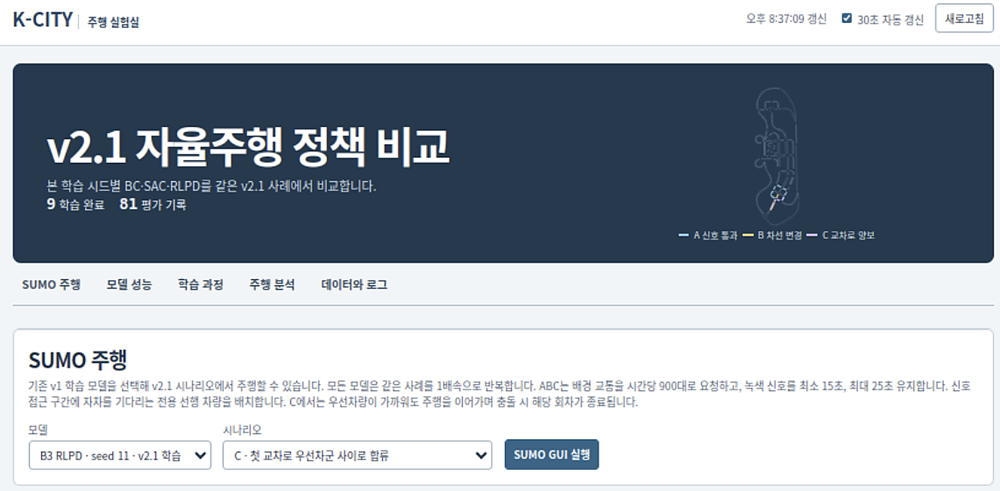
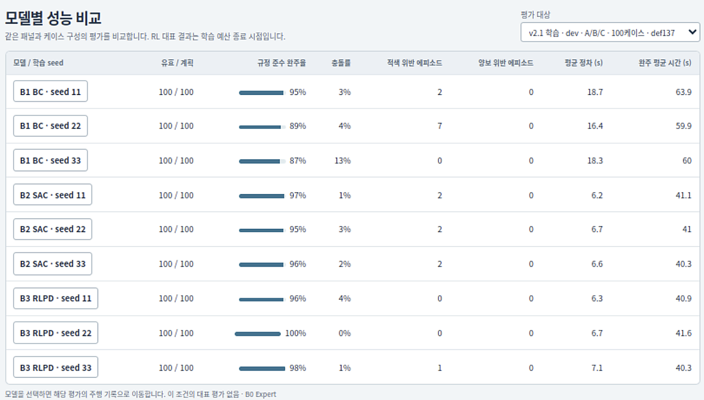
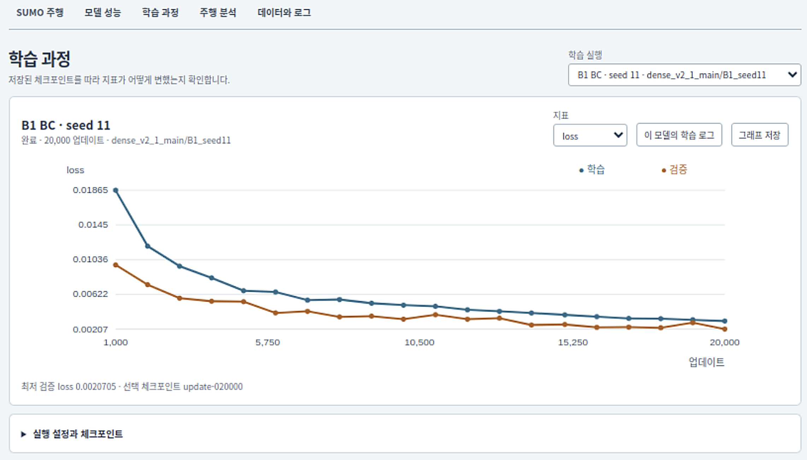
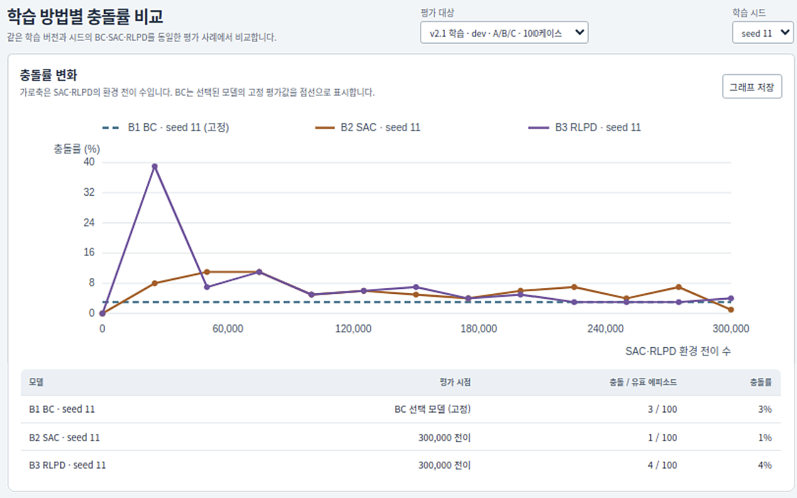
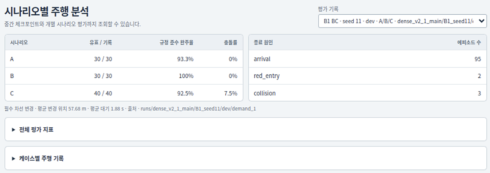
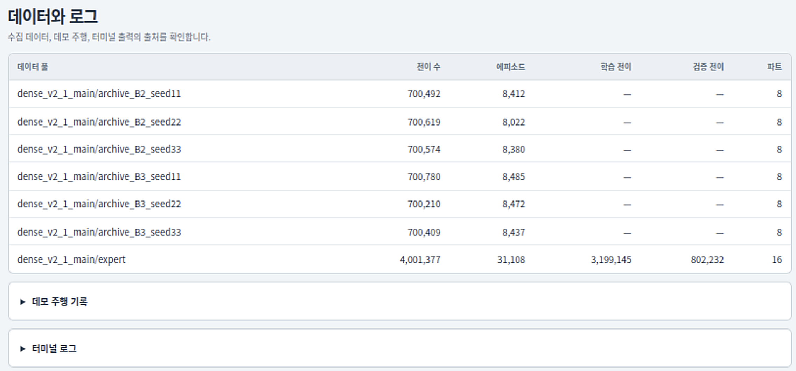
Python 3.9 이상 표준 라이브러리만으로 실행되고, 포트는 --port로 바꿀 수 있습니다. 자세한 사용법은 저장소의 대시보드 README에 있습니다.
| 모델 | seed 11 | seed 22 | seed 33 | 평균 ↓ |
|---|---|---|---|---|
| B1 BC | 3% | 4% | 13% | 6.7% |
| B2 Online SAC | 1% | 3% | 2% | 2.0% |
| B3 RLPD | 4% | 0% | 1% | 1.7% |
dev 평가 (고정 사례 100개 · 수요 1.0배). 최종적으로 SAC · RLPD는 모든 seed에서 5% 이하였고, BC는 최대 13%였습니다.
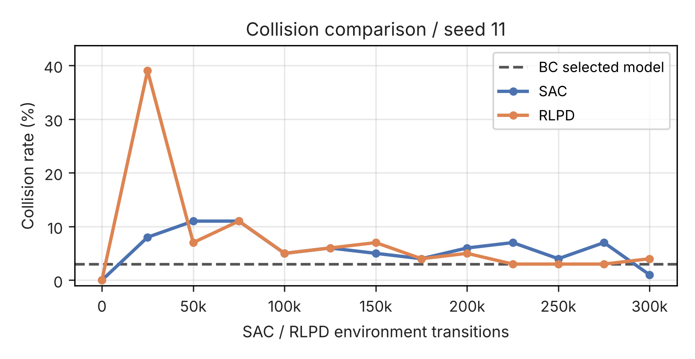
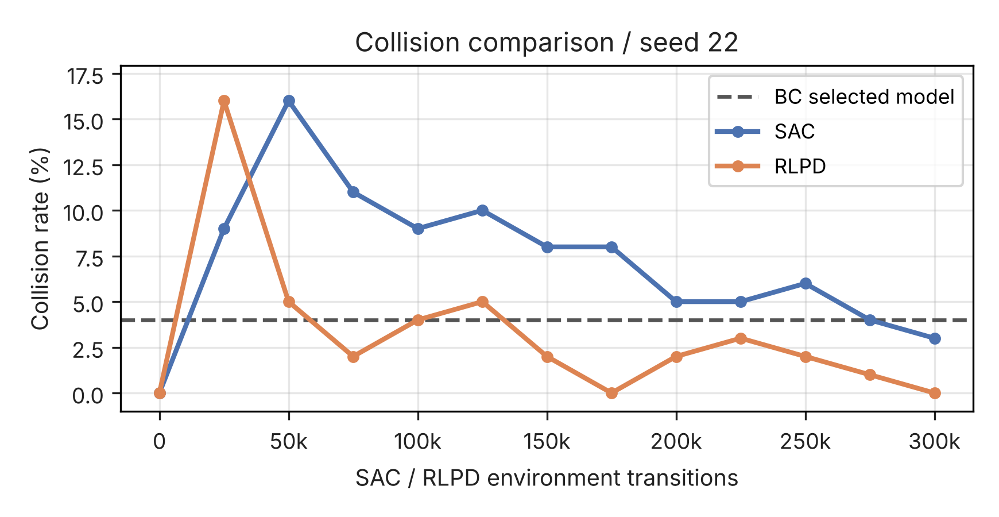
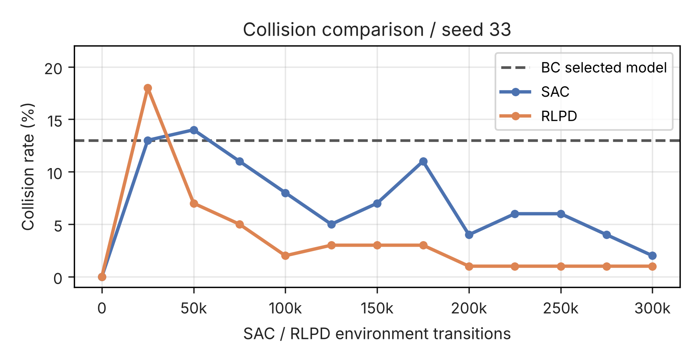
dev 평가 (100사례 · 수요 1.0배). 점선은 BC 선택 모델이고, 0 지점은 학습 전 정책입니다.
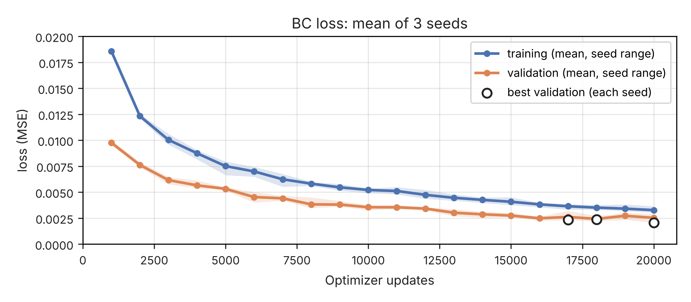
BC 학습 loss · 선은 seed 3개 평균, 음영은 seed 최소~최대, ○는 seed별 선택 checkpoint
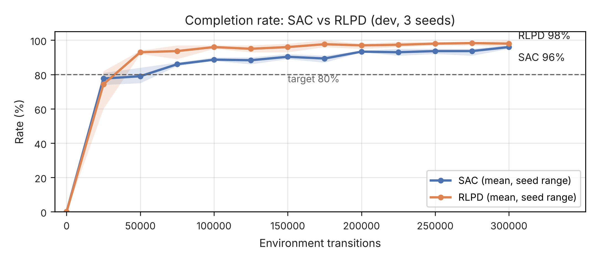
SAC vs RLPD 완주율 · 선은 seed 3개 평균, 음영은 seed 최소~최대 (dev 100사례)
초기 학습 모델(v1)의 일반화 성능을 검증하기 위해 일반 차량(HV)의 밀도를 높이고 주행 상황을 다변화한 확장 시나리오(v2)에서 기존 정책을 평가한 결과, 복잡한 교통 상호작용에 충분히 대응하지 못해 충돌률이 11~19% 수준으로 상승하였습니다.
보강한 시나리오(v2)로 BC · SAC · RLPD를 다시 학습해 충돌률 1~4%, 완주율 96~97%가 되었습니다 (seed 11 기준).
| 모델 | 완주율 (v1 모델) | 완주율 (재학습) | 충돌률 (v1 모델) | 충돌률 (재학습) |
|---|---|---|---|---|
| BC | 78% | – | 19% | 3% |
| SAC | 82% | 97% | 12% | 1% |
| RLPD | 89% | 96% | 11% | 4% |
보강 시나리오 dev 100사례 · seed 11 기준이며, 이 기준으로는 재학습 후 세 모델 모두 충돌률 5% 이하가 되었습니다. 재학습 모델의 seed 3개 평균 충돌률은 RLPD 1.7% · SAC 2.0% · BC 6.7%입니다.
전문가 데이터를 함께 쓴 RLPD는 SAC보다 약 2배 빨리 목표 성능에 도달했고, BC보다 충돌률을 안정적으로 낮췄습니다.
완주율 80%에 도달하기까지 RLPD는 SAC의 절반 정도 경험이면 충분했습니다.
RLPD가 SAC(96% · 2.0%)보다 조금 앞섰고, 두 방법 모두 목표인 충돌률 5% 이하를 달성했습니다.
loss는 seed끼리 같아도 충돌률 편차가 컸습니다. RLPD는 모든 seed에서 5% 이하였습니다.
세 영상은 같은 시각 · 같은 위치에서 출발하고, 같은 지점에 도착하면 멈춥니다. 배속은 SUMO 시뮬레이션 시간 기준으로 A 5배속, B · C 3배속이며, C는 합류와 교차로 통과까지 보여줍니다. 빨간 차량이 AV, 노란 차량이 일반 차량입니다.